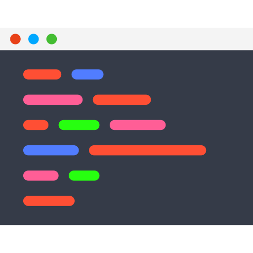

9. Claude Code Hooks
/
Lab - Cấu hình Hook PostToolUse tự động format code
Tái sử dụng project: Bài lab này dùng lại project D:\lab-expense-management
(Next.js + TypeScript) đã tạo ở Chapter 4, Section 4. Nếu chưa có project này, hãy hoàn thành bài Lab ở Section 4
trước, hoặc dùng bất kỳ project Next.js/TypeScript nào tương tự.
Mục tiêu
- Cấu hình một Hook
PostToolUse trong project lab-expense-management, tự động chạy Prettier mỗi khi Claude Code sửa hoặc tạo file qua tool Edit/Write.
- Hiểu cách khai báo
matcher theo tên tool trong settings.json.
- Kiểm chứng Hook hoạt động thông qua log terminal và
git diff sau khi yêu cầu Claude Code sửa một file cụ thể.
Mô hình kiến trúc
flowchart LR
Dev(("
 User
User"))
CC["
 Claude Code
Claude Code"]
Edit["

Edit / Write tool
sửa file trong project"]
Hook["
 PostToolUse Hook
PostToolUse Hookmatcher: Edit|Write"]
Script["
format-changed-file.ps1đọc file_path từ stdin JSON"]
Prettier["📐
Prettierprettier --write <file_path>"]
Repo["
lab-expense-managementchỉ file vừa được sửa"]
Dev -->|"Yêu cầu sửa file"| CC
CC --> Edit --> Repo
Edit -->|"Sau khi tool chạy xong, stdin: JSON chứa tool_input.file_path"| Hook
Hook --> Script --> Prettier --> Repo
Ngay sau khi Claude Code dùng tool Edit/Write để sửa file, Hook PostToolUse gọi script PowerShell đọc đúng đường dẫn file vừa sửa từ JSON stdin, rồi chỉ chạy Prettier trên file đó — không đụng đến các file khác trong project.
Yêu cầu trước khi bắt đầu
- Project
D:\lab-expense-management vẫn hoạt động bình thường
- Claude Code CLI đã cài đặt và đăng nhập thành công.
- Node.js phiên bản 18 trở lên đã cài đặt (
node -v chạy được).
- Terminal: PowerShell/Windows Terminal/Gitbash.
Các bước thực hành
-
Bước 1: Mở lại project và cài đặt Prettier
Cài Prettier như một dev-dependency của project (nếu project chưa có sẵn) để Hook có thể gọi npx prettier mà không cần tải lại mỗi lần chạy.
cd D:\lab-expense-management
npm install --save-dev prettier
-
Bước 2: Tạo file cấu hình Prettier cơ bản
Tạo file .prettierrc ở gốc project sau đó dán nội dung này vào:
{
"semi": true,
"singleQuote": true,
"trailingComma": "es5"
}
-
Bước 3: Tạo thư mục .claude và file settings.json khai báo Hook PostToolUse
Hook cần được khai báo trong settings.json ở phạm vi project (.claude/settings.json) — chia sẻ được cho cả team qua Git nếu muốn. Command gọi đến script format-changed-file.ps1 sẽ tạo ở Bước 4, thay vì gọi thẳng prettier --write ..
{
"hooks": {
"PostToolUse": [
{
"matcher": "Edit|Write",
"hooks": [
{
"type": "command",
"command": "powershell -NoProfile -ExecutionPolicy Bypass -File .claude/hooks/format-changed-file.ps1"
}
]
}
]
}
}
-
Bước 4: Viết script chỉ format đúng file vừa được sửa
Lệnh npx prettier --write . đơn giản nhưng format lại toàn bộ project mỗi lần Hook chạy, kể cả những file không liên quan — chậm hơn với project lớn và có thể động vào file User chưa muốn sửa. Claude Code truyền một JSON qua stdin cho mỗi lệnh Hook, trong đó field tool_input.file_path chứa đúng đường dẫn file vừa được Edit/Write. Script dưới đây đọc JSON đó và chỉ chạy Prettier trên đúng file này.
Tạo file: .claude/hooks/format-changed-file.ps1 và dán nội dung sau vào:
# Đọc toàn bộ JSON mà Claude Code truyền vào qua stdin
$stdinJson = [Console]::In.ReadToEnd()
try {
$hookData = $stdinJson | ConvertFrom-Json
} catch {
# JSON không hợp lệ -> bỏ qua, không chặn Claude Code
exit 0
}
# Đường dẫn file vừa được Edit/Write nằm ở field tool_input.file_path
$filePath = $hookData.tool_input.file_path
if ([string]::IsNullOrWhiteSpace($filePath)) {
exit 0
}
# Chỉ format các phần mở rộng mà Prettier hỗ trợ trong project này
$supportedExt = @('.ts', '.tsx', '.js', '.jsx', '.json', '.css', '.md')
$ext = [System.IO.Path]::GetExtension($filePath)
if ($supportedExt -notcontains $ext) {
exit 0
}
if (Test-Path -LiteralPath $filePath) {
npx prettier --write "$filePath"
}
Lưu ý: Tên field JSON chính xác (tool_input.file_path, tên tool...) có thể thay đổi theo phiên bản Claude Code — tham khảo tài liệu chính thức tại docs.claude.com để xác nhận schema JSON của Hook trước khi dùng cho công việc thật. Nếu muốn quay lại cách format toàn bộ project (đơn giản hơn nhưng chậm hơn), chỉ cần đổi command ở Bước 3 lại thành npx prettier --write ..
-
Bước 5: Khởi động lại Claude Code để áp dụng cấu hình Hook mới
Thoát phiên Claude Code hiện tại (nếu đang mở) và mở lại trong đúng thư mục project để Hook mới trong .claude/settings.json được nạp.
cd D:\lab-expense-management
claude
-
Bước 6: Yêu cầu Claude Code sửa một file cụ thể để kiểm tra Hook
Cố ý yêu cầu Claude Code thêm một đoạn code viết chưa đúng chuẩn format (thiếu dấu chấm phẩy, dấu cách không chuẩn) để dễ quan sát Prettier đã chạy lại sau đó.
Thêm vào cuối file src/app/(main)/page.tsx đúng nguyên văn đoạn code sau, không tự chỉnh sửa format hay style:
const testHookFormat = {a:1,b:2, c:3}
Chỉ cần thêm nguyên văn như trên, không cần chuẩn hoá theo coding convention.
-
Bước 7: Quan sát log terminal khi Hook chạy
Ngay sau khi Claude Code ghi xong file, quan sát terminal — Claude Code thường hiển thị thông báo đang chạy Hook đã khai báo (script .claude/hooks/format-changed-file.ps1) trước khi trả lời hoàn tất.
-
Bước 8: Kiểm chứng bằng git diff
Mở lại file để xác nhận Prettier đã tự động định dạng lại đoạn code vừa thêm (thêm dấu chấm phẩy, chuẩn hoá dấu cách, quy tắc dấu nháy theo .prettierrc).
git diff app/page.tsx
✅ Kết quả mong đợi
Đoạn code const testHookFormat = {a:1,b:2, c:3} được Claude Code ghi ra ban đầu chưa đúng chuẩn, nhưng ngay sau đó Hook PostToolUse tự động chạy Prettier và git diff cho thấy đoạn code đã được định dạng lại đúng theo .prettierrc (có dấu chấm phẩy, dấu cách chuẩn, dấu nháy đơn) — mà User không cần tự chạy lệnh format nào.
Troubleshoot
Lỗi: Hook không chạy, terminal không thấy thông báo thực thi command nào.
Nguyên nhân: File settings.json không đặt đúng vị trí (.claude/settings.json ở gốc project), hoặc Claude Code chưa được khởi động lại sau khi thêm Hook.
Giải pháp: Kiểm tra lại đường dẫn file, đảm bảo cú pháp JSON hợp lệ (không thiếu dấu phẩy/ngoặc), rồi thoát và mở lại phiên Claude Code trong đúng thư mục project.
Lỗi: npx prettier --write . báo lỗi không tìm thấy package hoặc cần tải lại mỗi lần chạy.
Nguyên nhân: Prettier chưa được cài làm dev-dependency của project (bỏ qua Bước 1) — npx phải tải tạm mỗi lần, chậm và cần mạng ổn định.
Giải pháp: Chạy lại npm install --save-dev prettier trong thư mục project để Prettier có sẵn trong node_modules.
Lỗi: Prettier báo lỗi cú pháp khi format (SyntaxError).
Nguyên nhân: File vừa được Claude Code ghi có lỗi cú pháp TypeScript/JavaScript thật (không liên quan đến style), Prettier không thể parse để format.
Giải pháp: Sửa lại lỗi cú pháp trong file trước, Hook sẽ tự chạy lại đúng ở lần Edit/Write tiếp theo.
Dọn dẹp resource
Bài lab này không tạo resource trên Cloud, chỉ thêm một file cấu hình cục bộ. Không cần xoá gì bắt buộc — chỉ dọn nếu không muốn Prettier tiếp tục tự chạy ở các bài lab sau.
Nếu muốn tạm ngưng Hook mà không xoá project, comment hoặc xoá phần "PostToolUse" trong .claude/settings.json:
.claude/settings.json (đã tắt Hook){
"hooks": {}
}
Quan trọng: Không xoá thư mục D:\lab-expense-management — project này còn được dùng lại ở các Section trước (Chapter 6, 7 Section 4; Section 8) và có thể còn dùng ở Section 10.